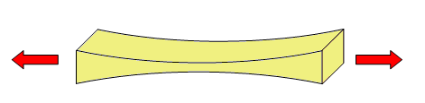
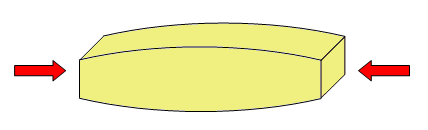
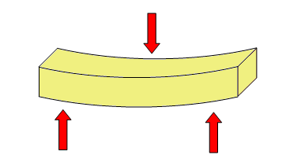
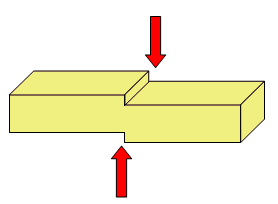
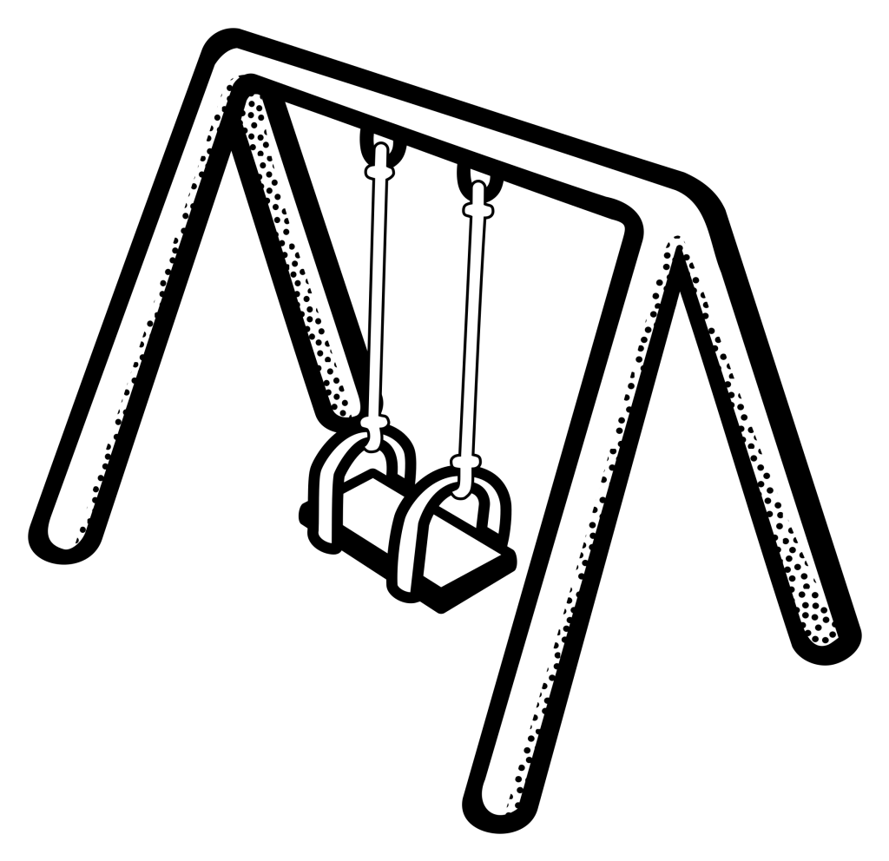

Esforços¶
Les estructures estan destinades a suportar les càrregues externes sense deformar -se ni trencar -se. Com a resultat d’aquestes càrregues externes, les estructures donen suport a les forces internes anomenades esforços.
Càrregues i esforços¶
- Càrrega
- És una força externa que actua sobre una estructura. Pot ser un pes, una empenta, dilatació tèrmica, etc.
- Esforç
- Tensió interna o força que suporta una estructura com a resultat de càrregues externes.
Per exemple, una persona asseguda en una cadira és una càrrega per a la cadira. A causa d'aquesta càrrega, les cames de la cadira admeten un esforç de compressió.
Hi ha cinc esforços diferents. A continuació s’explica cadascun.
Tracció¶
L’esforç de tracció tendeix a estirar l’estructura:
{kind=link}

Exemples d’elements que donen suport a aquest esforç són:
- Cadenes swing
- Cable de grua
Compressió¶
L’esforç de compressió tendeix a comprimir l’estructura:
{kind=link}

Exemples d’elements que donen suport a aquest esforç són:
- Cames de cadira
- Columnes d’un edifici
Flexió¶
L’esforç de flexió tendeix a doblegar l’estructura:
{kind=link}

Exemples d’elements que donen suport a aquest esforç són:
- Conseller
- Funda de construcció
- Braç de grua
Torsion¶
L’esforç de torsió tendeix a torçar l’estructura:

Exemples d’elements que donen suport a aquest esforç són:
- Eix d’un tornavís
- Clau quan es gira
- Eix eix
Tallar o cisalla¶
L’esforç de tall o d’esforç d’escolta tendeix a tallar l’estructura en dos:
{kind=link}

Exemples d’elements que donen suport a aquest esforç són:
- Paper cordat amb tisores
- Cargol que admet una imatge
Exercicis¶
Busqueu dos exemples d’estrès de tracció que no es troben en aquesta pàgina.
Cerqueu dos exemples d’esforços de compressió que no hi ha en aquesta pàgina.
Busqueu dos exemples d’esforços de flexió que no hi ha en aquesta pàgina.
Busqueu dos exemples d’esforços de torsió que no hi ha en aquesta pàgina.
Busqueu dos exemples d’esforços de cisalla o reducció que no es troben en aquesta pàgina.
Dibuixa i nomena els esforços que apareixen en un swing quan un nen es posa al seient.

Analitzeu els esforços que apareixen sobre una taula quan es col·loca un pes al damunt.
Analitzeu els esforços que apareixen en una grua quan aixeca una càrrega.

Origen de la imatge <https://commons.wikimedia.org/wiki/file:jib_crane.jpg> `` `¶
{kind=link}